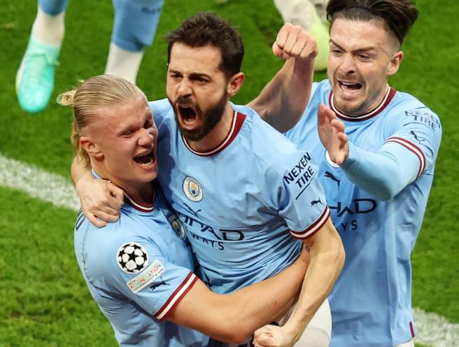
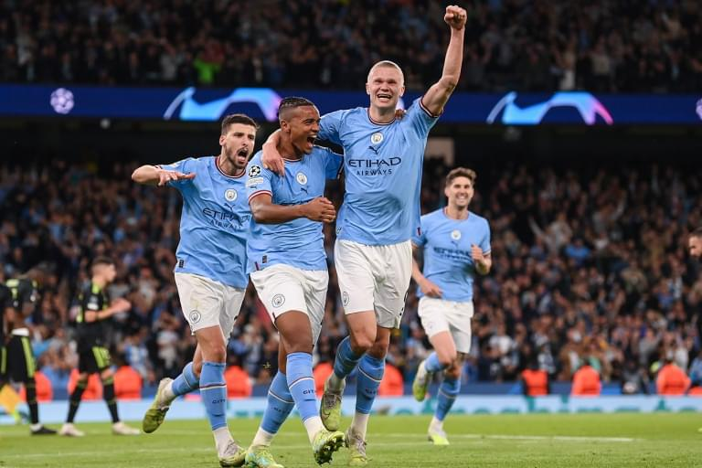
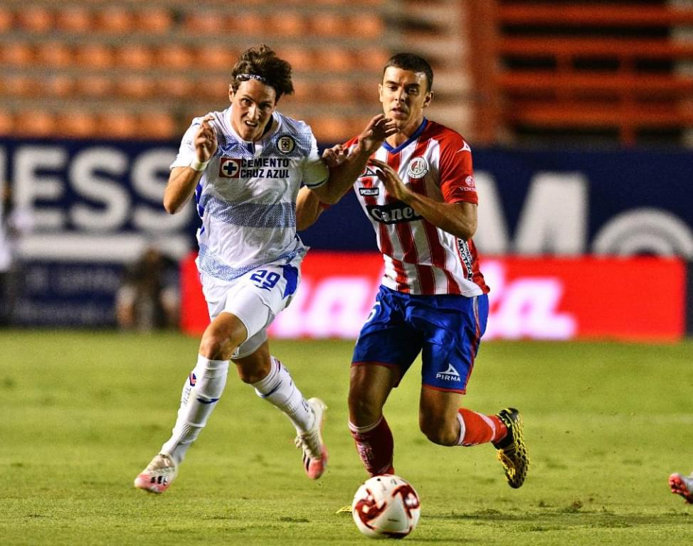

Final de la liga de campeones. ciudad de manchester - inter


La final de la Champions League reunió a miles de aficionados para ver quiénes serán los campeones de Europa este año.
El partido se jugó en el estadio de Wembley, que se llenó casi al máximo, lo que indica una calificación alta. Los equipos salieron al campo bajo la dirección de capitanes: Kevin De Bruyne jugó del lado del Manchester City, y Lautaro Martínez jugó del lado del Inter.

El primer tiempo comenzó con una intensidad asombrosa por parte de los mejores equipos. El Manchester City anotó rápidamente el primer gol en el segundo minuto, luego de un fuerte contraataque del delantero Raheem Sterling y un disparo certero al ángulo lejano de la portería del Inter. Sin embargo, el equipo del Inter no se rindió y siguió atacando las puertas del Manchester City, intentando igualar el marcador. Pero el defensa del Manchester City Ruben Dias y el portero Ederson Moraes se desempeñaron con fuerza durante todo el partido y no se dejaron llevar a la defensiva.
Sin embargo, la segunda mitad nos dejó con la boca abierta con novedades. En el minuto 85, Lautaro Martínez anotó un gol milagrosamente, levantando bruscamente el balón por encima de la cabeza del defensor y golpeando en el arco de Ederson Moraes. Los jugadores del Manchester City siguieron avanzando sobre las puertas del Inter, pero no lograron nivelar el marcador. El último pitido del árbitro supuso el final del partido y la victoria del Inter en la final de la Champions.
Los jugadores de ambos equipos se dieron la mano y felicitaron a los ganadores, mientras los aficionados del Inter comenzaban a celebrar en las gradas. Este partido permanecerá en los corazones de los aficionados durante mucho tiempo.